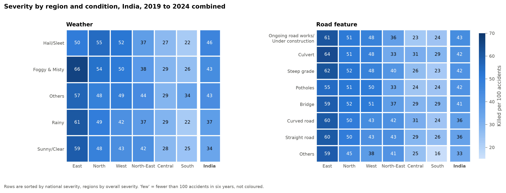
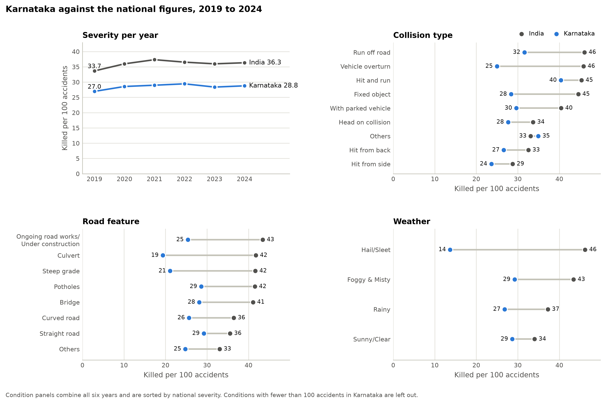

Risk check
Pick a state and a condition to see the predicted severity level. High means clearly more deaths per 100 accidents than the national figure (above 1.25 times); Low means clearly fewer (below 0.75 times).
Working out the prediction…
How sure is the model?
Why?
What actually happened: deaths per 100 accidents
Show the numbers
The prediction describes a whole category of accidents in a state, based on yearly totals. It is not a forecast for any single journey or crash.
Severity by state
Persons killed per 100 accidents. Tap a state for its figures.
Jammu & Kashmir and Ladakh are reported as one unit and share one value. States with fewer than 500 accidents in a year have unstable figures.
The deadliest conditions in India
All of India, 2019 to 2024 combined.
Show the full table

